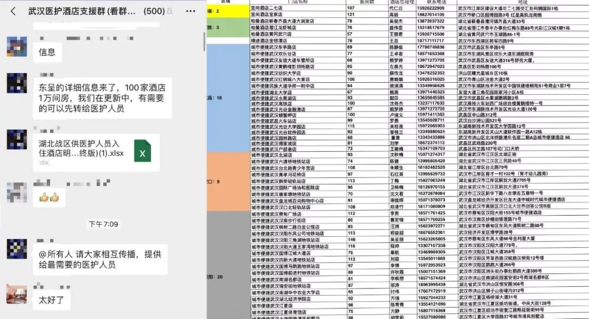
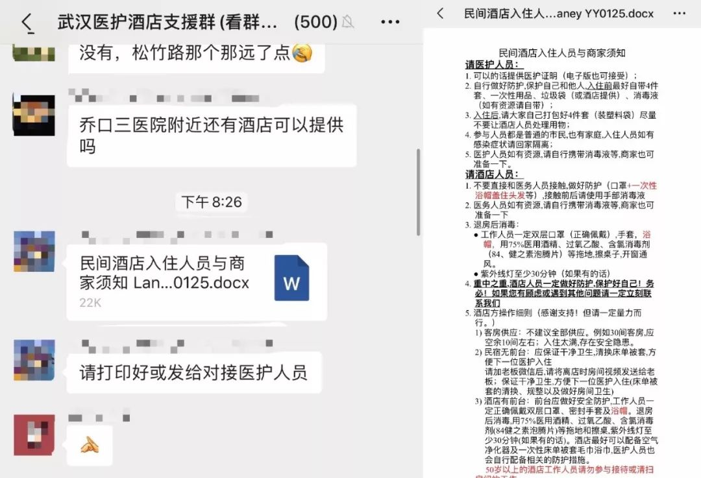
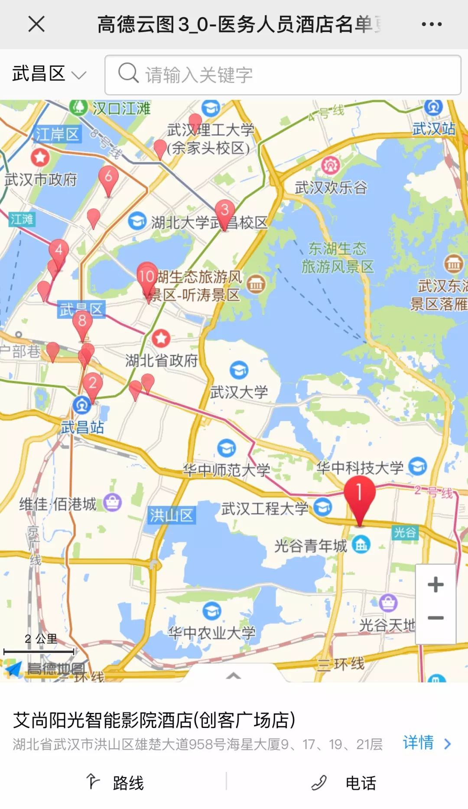

“超级传播者”：他转移4次病房，传染了14名医护人员
原文链接 备份链接 回溯新型冠状病毒在武汉的蔓延过程， “超级传播者”的出现， 几乎是一种必然 1月21日，国家卫健委高级别专家组成员、香港大学微生物学系讲座教授袁国勇提出“超级传播者可能已经出现”，称当时公布的武汉15名被感染医护人员当 …

近日，因新型冠状病毒肺炎疫情，湖北武汉封城，全市公共交通停运，医护人员上下班成难事。除民间司机团队自发组织接送外，除夕傍晚，武汉多家当地酒店自发组织，为医护人员就近提供免费住宿。
文 | 刘田 编辑 | 沈小山
近日，因新型冠状病毒肺炎疫情，湖北武汉封城，全市公共交通停运，医护人员上下班成难事。除民间司机团队自发组织接送外，除夕傍晚，多家当地酒店自发组织，为医护人员就近提供免费住宿。
截止今天晚上八点，武汉全市统计逾232家武汉酒店自发参与支援医护人员，为其就近提供免费住宿。这支昨天傍晚组建的酒店支援团队，在短短的一天之内，形成以武昌区和洪山区为中心，多网点辐射四周城区（如青山区、江夏区、汉阳区等地）的承接范围。

除了不少精品公寓式酒店之外，还有不少如如家、锦江之星、城市便捷等连锁酒店。其中，有77家为城市便捷酒店。目前，仍然有酒店申请加入中。

与除夕当晚的匆忙相比较，大年初一当天的酒店信息统计更新工作稍显从容。
今早10点25分，凌云在武汉医护酒店支援群内发了汇总酒店信息的石墨文档链接，以便酒店工作人员自行进行信息编辑。11点15分，群主肖雅星在群里公布了一个好消息，酒店工作人员可以通过微信小程序，填写调查问卷来提交酒店信息。

酒店的管理人员不用再在群内复制粘贴表格填写酒店信息，而凌云也不用如昨日般紧盯群聊，一一进行人工统计汇总。
主要负责统计、输出酒店信息的凌云，就职于飞猪旅行（一站式旅行服务平台）的湖北分部，因为业务关系，结识不少武汉酒店老板，便加入了武汉酒店支援团队的初期组建。
他告诉南都周刊记者，他们主要通过微信和钉钉两个平台，与酒店和医护人员沟通。微信群主要用于收集武汉酒店老板所能够提供的住宿房源信息，钉钉群则是医护人员对接的通道。
今早，环球旅讯投放加急制作的《武汉对医护免费住宿房源招募》调查问卷，帮助他们通过微信小程序收集自愿提供免费住宿的酒店商家信息。
调查问卷内包括酒店的招募须知、酒店急需的捐赠物资、捐赠物资的联系方式以及实时更新的酒店名单链接。
其中，在招募须知主要有两点信息，“只要您有空房，且社区居民不投诉；可以提供干净，独立的住宿环境即可（有中央空调的商家请关闭中央空调）；酒店房应量力而行，最好邻近相关的医院（如果路远我们有人对接车队）。”
在针对“量力而行”这四个字上，问卷不仅使用了粗体字，还根据客房供应和是否有无前台接待的情况作出了详细的说明。问卷强调了“不建议全部供应”所有客房，应保证三分之一的空房来减轻安全隐患。以及若“无前台接待”，则需医护人员自行保证房屋清洁，清换床单被套，方便下一位医护入住；若“有前台接待”，则需酒店工作人员做好安全防护工作，不与医务人员直接接触，并且在退房后对客房进行消毒。

在武汉医护酒店支援群内，群主肖雅星也反复提醒酒店的工作人员，让他们尽可能减少与医务人员的接触。
酒店商家自行填写调查问卷，环球旅讯负责通过问卷统计酒店信息，导入石墨编辑文档。而从最原始的信息统计中解放了的凌云则负责将石墨文档中的酒店信息统一导出，制作高德云图并发布在群内。

高德云图是酒店信息的地图可视化。将武汉分为十二个区。医务人员可通过手机定位获取周边酒店信息，仅需向酒店提供所在单位，姓名以及医院工作证明即可免费入住。
凌云表示，“（制作云图）不需要花很多时间，几分钟就可以更新一下。”
但是，高德云图的信息输入以及云图导出，现在都还需要人工操作，否则无法保证入住率百分百的及时性。因此，入住的医务人员仍需提前与酒店电话联系，确认房间是否仍有空缺。
“（酒店）住满了，会反馈给我们，我们再备注哪些酒店住满。”虽然如此，比起昨日完全凭借人力的忙碌，凌云告诉南都周刊记者，“现在（信息统计）已经有比较正常的分工，基本信息维护更新没有任何问题。”
虽然在招募须知中，有明确强调酒店工作人员应如何对酒店进行消毒，但由于春节节假日以及武汉封城的关系，酒店工作人员及消毒资源仍供应不足，凌云说，“目前都是医务人员自己在做卫生处理，避免交叉感染，我们的资源还是不够。有很多医生和我们讲了要如何进行消毒以及预防感染。”
当前，酒店急需各种消毒物资，如密封手套、84消毒液、75%浓度酒精、2000紫外线消毒灯、空气净化器、一次性床单被套和毛巾浴巾。他们也试图微博上招募消毒公司，为酒店提供专业的消毒服务。

因为物资紧缺，现在很多医务人员仍需自备床上三件套以及清洁消毒用品。
“现在医护人员酒店住宿需求很大，目前我们暂时还提供不了（很多医务人员的住宿），特别是汉口区域，酒店非常少。”
来源｜南都周刊
END
欢迎分享到朋友圈，如想取得授权请邮件：newmedia@nbweekly.com。如果想找到小南，可以在后台回复「小南」试试看哦~

原文链接 备份链接 回溯新型冠状病毒在武汉的蔓延过程， “超级传播者”的出现， 几乎是一种必然 1月21日，国家卫健委高级别专家组成员、香港大学微生物学系讲座教授袁国勇提出“超级传播者可能已经出现”，称当时公布的武汉15名被感染医护人员当 …
原文链接 备份链接 ********** *****黄锡璆表示，现在的技术条件比建设小汤山医院时好多了，他希望火神山医院的建设能够实现更好的使用效果。***** 火神山医院施工现场。受访者供图 文 | 新京报记者 韩沁珂 编辑｜王婧祎 校 …
原文链接 备份链接 图 / 上海捷诺生物官网 生产企业工人大多已经放假回家，厂家备货也不够充足。就算外面有支援调货过来，封城后也已经很难运送进来了。很多人想当然地以为这是国家供应的，其实它是按照市场采购流程走的，厂商自己要想办法完成配 …
原文链接 备份链接 新型肺炎疫情持续发酵，已致武汉封城。网络上的信息铺天盖地，仍无法解开我们的疑问。疫情真相为何？疫区实际情况是怎样？目前身在武汉的单读作者晓宇，讲述了他的所见所感。 瘟疫进行时 撰文：晓宇 一月十七日，我去车站接朋友。 …
原文链接 备份链接 “医务人员，有很多做公共工作的（职业），一个人得病以后可能传染很多人。”国家卫健委高级别专家组成员曾光提醒，“所以每个行业都得行动起来，千万别带病工作、带病旅游，这是非常危险的。” 全文4811字，阅读约需8分钟 ▲ …